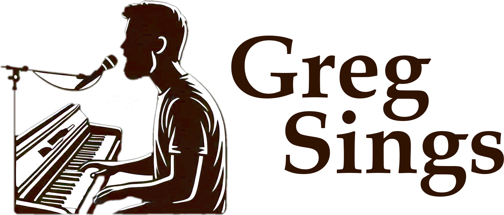

I, Greg Wilson, perform a mix of background piano music, Christian vocal+piano songs of my own, hymns, and folk or love songs at various
Senior Living centers around the Wichita, KS area. I would describe my background piano music as relaxing and a bit cinematic!
Listen to my "Fruits of the Spirit"
piano improvisational album at this link.
Or check out my other vocal+instrumental song albums at the following link:
Bought with a Price Music
Bought with a Price is
my artist name I go by, for songwriting.
I can also do singing with guitar. I am available to come to your
senior living center in the Wichita area if you are an activity director, etc... at a place.
These events are
$100 per 45 minute concert.
If your budget is lower, I am flexible. Or if you generally pay more than $100, I am flexible in that way as well!
I would love to come to your church or ministry and lead any kind of worship service, special or regular.
My heart is to love the King of Kings Jesus and bring glory to Him. He is my Lord and Savior, the King of Love,
who I desire for all to experience in a personal way, encountering His touch in their hearts and minds. I sing and lead from piano, as well as give motivating, thought-provoking messages.
My chief desire is to create an atmosphere where the music conveys the presence of God, and in special worship/prayer times, create an atmosphere in which people can tune in to the Father and feel His comfort and receive His wisdom and guidance for their lives.
See Greg's Other Ministry Efforts

I am also available to bring my keyboard to your coffeeshop or restaurant to provide
background, relaxing piano music that is peaceful and a bit cinematic, as I mentioned earlier... Listen to my "Fruits of the Spirit"
piano improvisational album at this link,
as I posted earlier (posted again for convenience).
For background music, if you have a budget for that, pay is great, but if not, allowing me to have a tip jar would be helpful!
Maybe you are a venue that features singing artists... I am also available to do that, singing my original Christian/Messianic songs
written for keys and voice or guitar and voice.
Again, you can hear my vocal+instrumental work HERE, or find videos of me singing and playing at my
youtube channel.
I currently do not have any other band members playing with me, but that could change in the future.
Perhaps you have a budget to pay an artist like myself for a show like mentioned above.